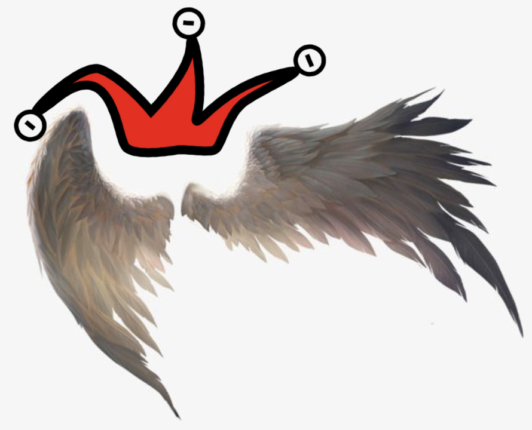
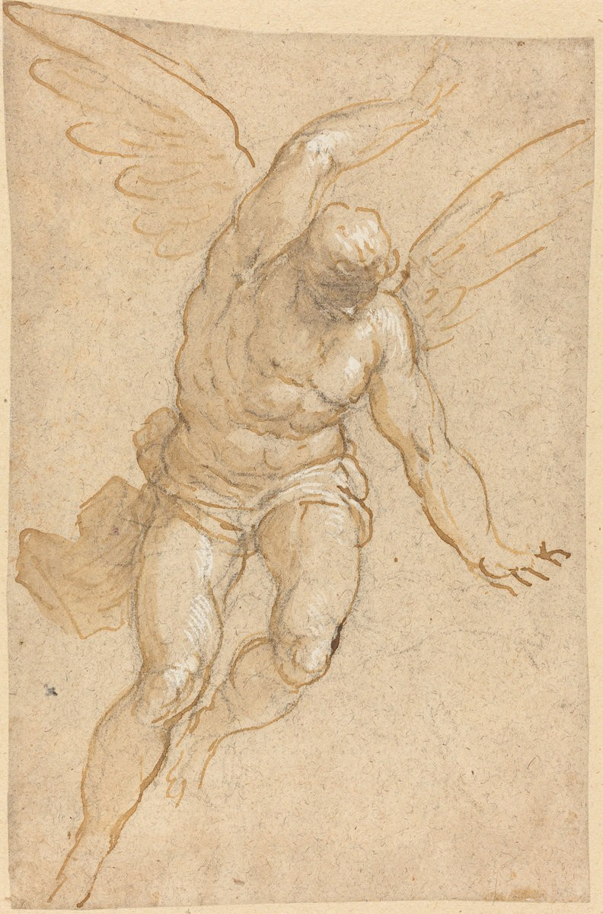
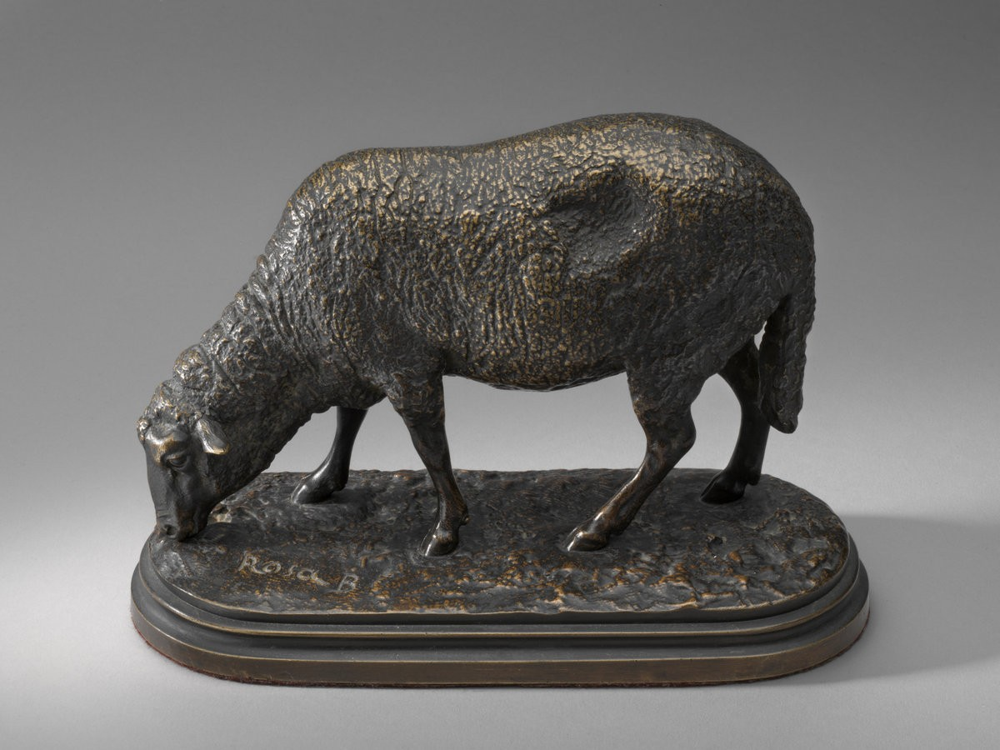
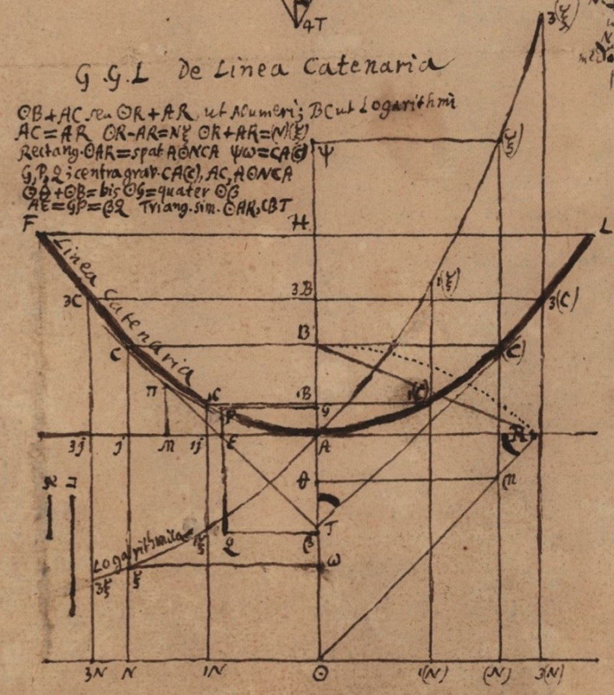

Bear me Wings, Jester
April 26, 2020
(For deeper engagement, read me while listening to J.H. Schmelzer: La Margarita — Music for the Court of Vienna & Prague)

My lord: Bear me wings, Jester.
Jester: Wings M'lord? Wings of what, why, and, what for?
My lord: Wings of vigour Jester. Wings of will. To thrust me higher, hurl me eternal into thrill.
Jester: A mere Jester M'lord. I. Can bestow such things?
My lord: You, and the rest of my court.
Jester: Us? Could?
My lord: Yes. I have seen it.
Jester: Ah M'lord. Another one of your visions, your nightly dreams...
My lord: No Jester, It is real! I was there. At Lord John's. His spirit high as the sky. His Jester, the opposite of you. Uplifting, vitalising. And not only he. Every one of his master philosophers. All chanting an immaculate unison symphony. Heavenly clangs of a single ediction: Upwards. The only righteous decree.

A Flying Angel (1580/1590)
Jester: Ahh M'lord! The Sunday mass you mean. We could... train a better choir. We could... convince lady Nightingale. Her voice truly gladdens. Her voice and her...
My lord: Enough! Imbecile. Not a dream nor a vision, not a mass nor an occasion. A true, a new, predisposition. Lord John's newest master Philosopher. Master Sorbet. He teaches them an unusual dichotomy. A dichotomy of thoughts and of thinking.
Jester: A new black and white, I see. Always compelling, often weighty. I wonder M'lord. The motherless black sheep gathered guilty by this novelty, who might they be? I hanker not me.

Ewe, or A Grazing Sheep (half 19th century)
My lord: You, all of you pessimists. Why can't you see! Delving in thoughts that ought not be. Here an unsurmountable problem, there an impossible difficulty. To the left, a bleak prediction, to the right, a dark prophecy. No royal road to Geometry? And why should that be? You drag me down all of thee. So off with you, poisoning my destiny. If only, if only I had more cheerful company. Infecting each other with optimistic vivacity. The stars are the limit for such a camaraderie.
Jester: I confess. I too would cherish such sorcery. Expunging all problems by belief and jollity. I wish it now M'lord, I beg you. Let us start with the Catenary. Has master Sorbet happysolved this unholy Alchemy?
My lord: No Jester my pitiful fool. That, is not the measure of proficiency. Seek not there, instead, observe their kingdom's economy.

The Leibniz catenary — De Linea Catenaria
Jester: Yes M'lord, inordinate I agree. But M'lord. Causation, attribution, to Sorbet's philosophy, is this due honestly?
My lord: Jester, you should revise your history. Lord John's miners struck gold in their mountains the last century.
Jester: I see M'lord, I see. Away with confused me. A pessimistic black sheep trots hence, optimistically. A last happy thought before I retire to invisibility. Perhaps an avant-guarde optimist like you M'lord, can bear himself wings, individually.
(For your pleasure, listen to J.H. Schmelzer: La Margarita — Music for the Court of Vienna & Prague until the end, it's a beautiful piece)
Vocabulary
Happysolve (verb): To happysolve. To solve a hard problem by sheer optimism.
References
A Flying Angel (1580/1590): National Gallery of Art
Ewe, or A Grazing Sheep (half 19th century): National Gallery of Art
The Leibniz catenary and approximation of e: Historia Mathematica